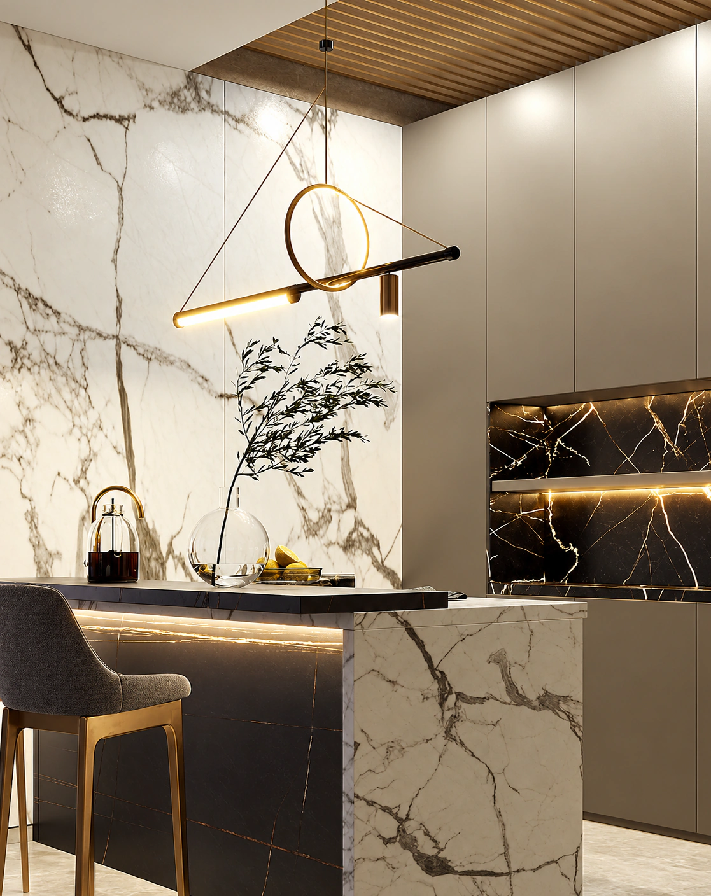

A PERSONAL PERSPECTIVE
A NEW WAY
TO FEEL AT HOME.
Spaces that bring together architecture, atmosphere, and the rituals of everyday life. A considered collection of kitchens, each with a point of view.
Discover your directionA WORLD OF POSSIBILITIES.
THREE MOODS. YOUR OWN EXPRESSION.THE KITCHEN COLLECTION
DESIGN WITH
CHARACTER.
Nine perspectives on the heart of the home.
Find the one that feels like you.
Find another perspective.
Explore a different mood from the collection.

THE MARBLE EDIT / A STUDY IN DETAILTHE P. INTERIORS PERSPECTIVE
DETAILS DEFINE
THE WHOLE.
A line of warm light. The rhythm of a surface. The balance between richness and restraint. Small decisions give a space its distinct character.
Our collection is a starting point for discovering what matters to you — and bringing those details into your everyday.
The way we see itBEYOND THE FIRST IMPRESSION
BEAUTY, IN
THE EVERYDAY.
A kitchen is where life happens.
Good design makes room for all of it.
FROM INSPIRATION TO INTENTION
YOUR FIRST IDEA.
YOUR NEXT CHAPTER.
01Begin with your everyday.
The first coffee. A busy evening. The people who gather in your kitchen. Think about how you want your space to feel, and the life it needs to hold.
02Find your point of view.
Explore the collection and notice the tones, textures, and details you return to. Your preferences give the conversation a direction.
03Bring your ideas together.
Create a project brief with your favourite design, your timeline, and the details that matter to you. Save it as the starting point for your next conversation.
LET’S START WITH YOUR VISION